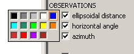

The snapplot key window is used to select colours for each feature on the map and to select which features are displayed. Each feature may have an associated colour and a checkbox.
To hide or display a feature click the check box. Some features may be represented by more than one check box. For example a horizontal angle observation in the adjustment will be affected by the "horizontal angle" check box, and the "Used obs" checkbox. It will only be displayed if both are selected.
To change the colour of a feature, position the mouse over the colour box, and hold down the the left mouse button. This will give display a colour palette. Drag the mouse to a new colour, and release the button to select it.

Additional colours can be added to the palette using the View | Add colour to palette menu item.
The following features may be included in the key:
| Free stations Hor fixed stns ... |
This has a category for each usage of station in the adjustment (free (adjusted), fixed (constrained), or rejected). Rejected stations are those that are explicitly rejected in the snap command file, or automatically rejected because there are insufficient observations to calculate their coordinates. The colour box is used to choose the colour of the station symbol (if it is displayed). Note that hiding a group of stations with the check box may also hide all the obserations to and from those stations. This behaviour is controlled by the display options dialog. Note also that stations may be shown or hidden with the hide stations dialog. |
| Symbol Name Code |
Chooses whether symbols, names, or codes are displayed for each station |
| Error ellipses ... |
Controls the display of error ellipses of stations, relative error ellipses of observed lines between stations, vertical error bars and relative error bars, and station adjustments (changes to stations coordinates). The scaling of errors is controlled by the error options dialog. |
| OBSERVATIONS | The categories of observations displayed may be changed using the Observations | colour coding menu item. They can be coded by observation type, data file, size of residual, redundancy, or any observation classifications. The key will always provide options for hiding or showing each observation data type. |
| Used obs Rejected obs Unused obs |
Used obs are observations used to calculate coordinates, or contributing to the adjustment statistics. Rejected obs are observations explicitly rejected in the data file. Unused obs are observations which are not used in the adjustment because they are to automatically rejected stations. |
| BACKGROUND | General features of the map. Additionally if background background graphical features have been added to the plot their display options will be shown here. |
| Map background | Changes the colour used for the map background. |
| Text | Changes the colour used for text (station names or codes). This colour is also used for the border of station symbols. |
| Highlight | Selects the colour used to highlight stations and observations (highlighted stations are selected with the highlight stations dialog, highlighted observations are selected with the highlight observations dialog). |
| Selected | Selects the colour used to represent the selected station or observation. |